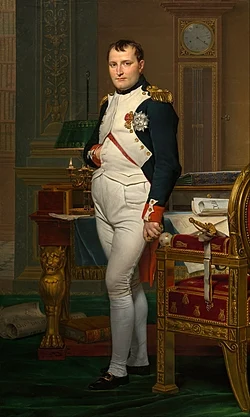
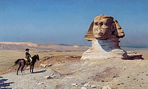
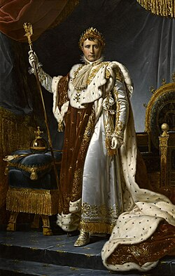
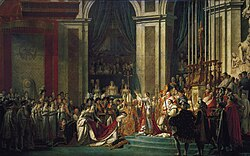
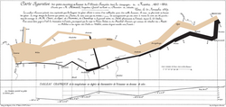

Napolyon Bonapart

İmparator Napolyon Tuileries'deki Çalışma Odasında, Jacques-Louis David'in çizimi (1812)
Napolyon Bonapart (Fransızca: Napoléon Bonaparte; İtalyanca: Napoleone Bonaparte) veya I. Napolyon
kısaca Napolyon (15 Ağustos 1769, Ajaccio - 5 Mayıs 1821), Fransız asker, politikacı ve 1804-1814
arası (ve 1815'te kısa süreliğine) Fransa imparatoru. Gerek Fransız Devrim Savaşları gerekse
Napolyon Savaşları sırasında Fransa'ya önderlik ettiği gibi tüm Avrupa'yı da etkilemiş önemli bir
komutandır. Girdiği savaş ve çatışmaların büyük bölümünü kazanmış, 1815'teki nihai yenilgisine kadar
hızla Avrupa kıtasının hakimiyetini ele geçirmiştir. Tarihteki en önemli komutanlardan biri olan
Napolyon'un savaşları dünyanın her yerinde askerî okullarda ders olarak okutulmaktadır ve kendi
Avrupa tarihinin en ünlü ve en tartışmalı siyasi figürlerinden birisidir.
Napolyon bir devlet adamı olarak tüm Fransa'da ve Avrupa'da büyük liberal reformlar uyguladı.
Yönetimi sırasında bir halk eğitim sistemi kurmuş, feodalizmin kalıntılarını ortadan kaldırmış,
Yahudi (bkz. Napolyon ve Yahudiler) ve diğer dini azınlıkları özgürleştirmiş, gelişmekte olan orta
sınıfın yasalar önünde eşitliğini sağlamış ve dini otoritelere karşı devletin gücünü
merkezileştirmiştir. En kalıcı hukuki başarısı, Doğu Asya'da Japonya'dan, Kuzey Amerika'da Québec'e
kadar dünyadaki hukuk sistemlerinin dörtte birine çeşitli şekillerde uyarlanmış olan Napolyon
Kanunları'nı hazırlatmasıdır.
Adanın Ceneviz Cumhuriyeti'nden Fransa'ya geçtiği yılın ertesinde Korsika’da, Toskana asıllı soylu ve
görece mütevazı bir İtalyan ailenin oğlu olarak dünyaya gelmişti. Fransız ordusunda topçu subayı
olarak çalıştığı sırada gerçekleşen Fransız Devrimi'ni 1789’da ortaya çıktığından itibaren
destekleyip doğum yeri Korsika’ya yayılması için çalıştı ve 1793’te adadan sürgün edildi. İki yıl
sonra (“cumhuriyet takvimi'ne" göre 13 Vendémiaire günü) Paris çetelerini topa tutarak Fransız
hükûmetini çöküşten kurtaran Napolyon, henüz 26 yaşında iken İtalya seferi için hazırlanmış Fransız
ordusunun komutanlığına getirildi. Genç komutan 1796'da Joséphine de Beauharnais ile düğününün hemen
ardından Birinci Koalisyon güçleri üzerine sefere çıktı. Bu ilk seferinde elde ettiği kesin zaferler
sayesinde tüm Avrupa'da tanındı. İtalya seferinden sonra 1798'de Osmanlı Devleti’nin bir vilayeti
olan Mısır’a askeri bir sefer düzenledi. Bu sefer sırasında Memlük beylerini yenerek Osmanlı
toprağını işgal etti ancak elinde tutmayı başaramadı. Bu askeri sefer sırasında Napolyon ordusundaki
askerler tarafından yapılan keşifler sayesinde modern Mısırbilim'i başlamıştır.
Fransa’da devrimden sonra kurulmuş olan yönetim (Direktuvar), Mısır’dan Fransa’ya dönen Napolyon ile
destekçilerinin gerçekleştirdiği 18 Brumaire Darbesi ile çökmüş ve Fransa’da Konsüllük idaresi
kurulmuştur. Napolyon, Konsüllük idaresinin ilk konsülü olarak atandı ve Fransa üzerindeki siyasi
hakimiyetini kademeli olarak artırdı. Birleşik Krallık ile Amiens Antlaşması'nı imzalayarak 1802'de
Devrim Savaşları'nı sonlandırdı. Nihayet 1804'te Fransız Senatosu tarafından “Fransa imparatoru”
olarak ilan edildi.
Kıta Ablukası'nı genişletmek umuduyla İber Yarımadası'ını işgal eden İmparator Napolyon, 1808'de
kardeşi Joseph Bonaparte'ı İspanya kralı ilan etti. İspanyollar ve Portekizliler Birleşik Krallık'ın
desteği ile isyan ettiler. Yarımada Savaşı (İspanyol Bağımsızlık Savaşı) adıyla bilinen savaş 6 yıl
sürmüş ve acımasız bir gerilla savaşı olarak tarihe geçmiştir. Savaş, Fransa'nın yenilgisi ile
sonuçlandı. 1808'de Avusturya da Fransızlara karşı ayrı bir mücadele başlatmıştı. Avusturyalıları
Wagram Muharebesi'nde yenen Napolyon, Fransa'ya karşı oluşturulan Beşinci Koalisyon'u dağıttı.
Beşinci Koalisyon Savaşı'nı sonlandıran Schönbrunn Antlaşması'nın ardından eşi Josephine'den boşanıp
II. Franz'ın kızı Avusturya Prensesi Marie Louise ile evlendi (1810).
Napolyon, Roma İmparatorluğu devrinden beri bu denli büyük bir siyasi birleşme yaşamamış olan
Avrupa'da 1811'den sonra 70 milyonun üzerinde insana hükmetmiştir. Çeşitli ittifaklar ve akrabalık
ilişkileri kurarak stratejik pozisyonunu korumuş ve Fransa'da yeni bir aristokrat sınıfı
oluşturmanın yanı sıra Devrim sırasında ülkeden sürgün edilmiş asillerin de dönmelerine olanak
vermiştir.
Polonya milliyetçiliğinin tırmandırdığı gerilim ve Kıta Ablukası'nın ekonomik etkilerinden ötürü
Rusya ile ilişkilerin yeniden gerilmesi üzerine Napolyon, Kıta Ablukası'nı güçlendirmek amacıyla
1812 yılında Rusya'ya sefer düzenledi (bkz: Napolyon'un Rusya Seferi) ve bu sefer Fransızlar
açısından büyük bir felaket ile sonuçlandı. 1813 yılının başlarında Rusya ve Prusya, Fransa'ya karşı
güçlerini birleştirdi ve aynı yılın sonlarında Altıncı Koalisyon'a Avusturya da katıldı. Ekim
1813'te müttefik ordusu Napolyon'u Leipzig Muharebesi'nde yenilgiye uğrattı. Müttefikler 1814'te
Fransa'ya bir saldırı başlatıp Paris'i ele geçirdiler ve Nisan 1814'te Napolyon'u tahttan feragat
etmeye zorladılar. İmparator, Elba adasına sürgün edildi. Bourbon Hanedanlığı tekrar başa geçti ve
Fransızlar devrimden itibaren ele geçirdiği bölgelerin çoğunu kaybetti. Napolyon Şubat 1815'te Elba
adasından kaçıp Fransız hükûmetinin başına geçmeyi başardıysa da kendini yeniden koalisyon güçleri
ile savaşta buldu. Bu yeni koalisyon Temmuz ayında Waterloo Muharebesi'nde onu kesin bir yenilgiye
uğrattı. İngilizlere teslim olan Napolyon, gözlerden uzak bir yerde olan Saint Helena Adası'nda
hapse gönderildi. 51 yaşında 1821 yılında mide kanserinden öldü. Cenazesi yakıldı ve vefatı tüm
Avrupa'da büyük bir şok ve üzüntü ile karşılandı. 15 Aralık 1840 tarihinde bir milyon kişinin
şahitliği ile külleri Paris'e, hâlen bulunduğu Les İnvalides'e defnedildi.
Hayatı
Ailesi, eğitimi ve gençlik yılları
15 Ağustos 1769'da İtalyan kökenli bir ailede Korsika adasının Ajaccio kentinde doğdu. Ana dili
Korsikaca idi. Doğduğu zaman adı, “Napoleon di Buonaparte” idi, 1796'da soyadını
Fransızlaştırarak “Napoléon de Bonaparte” yapmıştır. Avukat Carlo Buonaparti ile Maria Letizia
Ramolino çiftinin 8 çocuğundan ikincisi idi. Annesinin sert disiplini altında yetiştirildi. Babası,
Cenova Cumhuriyeti'nin bir parçası olan Korsika'nın 1768'de Fransa yönetimine girmesinden sonra
Fransız sarayının hizmetine girmiş ve Bounaparte ailesi Fransızlar tarafından 1771'de soylu ilan
edilmişti. Ailesi zengin değildi ancak babasının bağlantıları sayesinde Napolyon ve kardeşleri,
Fransa'ya gitme ve burslu okumak imkânı elde etti.
Napolyon 1779 yılında ağabeyi Joseph ile birlikte eğitim için Fransa'ya gönderildi. Autun'da bir
kolejde Fransızca öğrenmeye başladı ve aynı yıl Brienne'daki askeri okula girdi. Matematikteki
başarısı sayesinde 1784'te Parisien École Royale Militaire (Paris Kraliyet Askeri Okulu) adlı
askeri akademiye kabul edildi. Matematik ve geometriye olan ilgisini daha iyi değerlendirebilmek
için topçu sınıfını tercih etti. Okul sırasında babasının ölümü ile geliri azalan Napolyon, iki
yıllık okulu bir yılda bitirdi.
1785 yılının Nisan ayında Valence'daki topçu alayına üsteğmen rütbesiyle katıldı. Askerlik yaşamının
ilk sekiz yılında sık sık uzun süreli izin alarak memleketi Korsika'ya gitti.
Mısır Seferi

Büyük Gize Sfenksi önünde Napolyon Bonapart
apolyon, 1797 yılı sonunda Paris'e döndü. Fransız yönetimi (Direktörler), 1798 yılı başlarında onu
İngiltere anakarasının istilasıyla görevlendirdiler. Ancak Napolyon, denizlerde etkili bir üstünlük
sağlanmadan böyle bir operasyonun başarı şansı taşımadığını, İngiltere'ye karşı dolaylı bir strateji
izlemenin en mantıklısı olduğunu savunmuş ve Mısır'ın işgal edilerek İngiltere'nin Uzak Doğu ticaret
yolunun kesilmesini önermiştir. Dışişleri Bakanı Talleyrand ile anlaşıp önerisini Direktuar
hükûmetine kabul ettirdi ve Fransız donanması 19 Mayıs 1798'de Mısır seferi için yola çıktı.
Akdeniz'de devriye gezen Britanya donanmasını 10-13 Haziran'da yenilgiye uğratıp stratejik öneme
sahip Malta'yı işgal eden Fransız donanması, 1 Temmuz'da İskenderiye önüne demir attı;
İskenderiye'yi işgal ettikten sonra Kahire'ye yöneldi. Mısır resmen Osmanlı toprağı sayılsa da güç,
Memluk Beylerinin elindeydi. Memluk Beyi'nin ordusunu Piramitler Muharebesi’nde yendikten sonra 22
Temmuz’da Kahire’ye muzaffer bir komutan olarak girdi. İslam padişahının dostu olduğunu, Memlûk
Beyleri’nin nüfuzunu sona erdirmek üzere Kahire’ye girdiğini iddia eden Napolyon yaptığı din
propagandası ile halkı yanına çekmeye çalıştı. Merkez ve eyaletlerde kurduğu divanlara ulemaları
atayarak ülkeyi divanlar aracılığıyla yönetmeye başladı.
Ne var ki Napolyon’un Mısır’daki başarısı kalıcı olmadı. İngiliz Amiral Horatio Nelson komutasındaki
İngiliz donanması, Abukir körfezinde demirlemiş Fransız donanmasını Nil Muharebesi’nde imha edince
ordunun ikmal bağlantısı kesildi. Napolyon ve ordusu Mısır’a hapsolmuştu. Bu gelişme Napolyon’un
Kahire’de giriştiği düzenlemelerin hızını kesmedi. Sulama projeleri, okul ve hastane inşası, gazete
açma, tiyatro kurma gibi projeleri sürdürdü. Akdeniz’den Kızıldeniz’e bir kanal açılması için
planlar hazırlamaya, Mısır’ın ekonomik olarak kalkınması için tedbirler almaya başladı. Dindar
Müslümanları memnun etmeye çalıştı hatta kendinin Müslüman olduğunu ima etti. Mısırlılar artık
ona “Ali Bonapart” demeye başlamıştı.[
Ancak bir süre sonra Fransızların İslam’a saygı duyduklarını söylemelerine rağmen Mısır’ı sömürmek
için ellerinden geleni yapmaları, ülkede Fransızlara karşı bir tepki doğurdu. 21 Ekim’de El-Ezher
Camisi etrafında kümelenen Müslümanlar ayaklanma başlattı. Ayaklanmayı çok kanlı bir şekilde
bastıran Napolyon, durumunun sağlam olmadığını görüyordu. Mısır’a kara yönünden gelecek tehditleri
engellemek için Şubat 1799’da orduyu Filistin’e doğru yürüyüşe geçirdi. Hedefi, "Doğu’nun
imparatoru" olmak, İndus’e kadar ilerlemekti.
Ordusuyla Yafa’ya giren Napolyon şehirdeki on bin kadar asker ve sivili kılıçtan geçirdi;[10] 19
Mart’ta Akka Kalesi önüne geldi. Cezzar Ahmet Paşa komutasındaki sert Osmanlı direnişi karşısında
bozguna uğradı. Bu yenilgi karşısında Mısır'a geri dönmek zorunda kaldı.
Avrupa’da Fransa’nın Koalisyon ordularına yenildiğini haberini alınca ülkesine dönme kararı aldı.
Eylül 1799’da ordusunu Mısır'da bırakarak iki küçük gemiyle Fransa'ya döndü.
Devrim Cumhuriyeti'nin sonu: İmparatorluk

Taç giyme törenindeki kıyafeti ile
1804 yılının Mayıs ayında, kralcıların bir komplosunu bahane eden Napolyon kendini imparator ilan
etti. Konsüllüğü 1804’te irsi imparatorluğa dönüştü. Teklif, Mayıs ayında oybirliği ile Tribunat
meclisinden (Lazare Carnot’un karşı oyuna rağmen) ve Senato’dan (üç karşı oya rağmen) geçti. Karar,
2 Ağustos’ta yapılan halk oylaması ile onaylandı: 3,572,329 "evet ve 2579 "hayır" oyu verildi.[12]
Napolyon, yeni rejimi kurmaya başlamak için halk oylaması sonuçlarını beklemeyi gerekli görmedi.
Hemen ağabeyi Joseph ile kardeşi Louis'yi prens ilan etti; Les Invalides'te bir tahta oturup
yetenekli subaylara Legion d'honneur nişanı verdi.
29 Kasım'da Josephine ile dini nikâh kıyan Napolyon imparatorluk tacını 2 Aralık 1804'te Notre Dame
Katedrali'nde giydi. Tacı Papa'nın giydirmesi planlamıştı ama Papa'nın önünde eğilmek, otoritenin
Tanrı'dan geldiğinin kabulü olarak yorumlanabilirdi. Eğilmek yerine tacı eline alıp önce kendi
giydi; sonra eşi Josephine giydirdi.[13] Kendi eliyle taç giydi ama, Paris'teki Notre Dame
Katedrali'ndeki törende Papa VII. Pius'un da bulunmasını sağladı. Törende olayı resimlemek üzere
bulunan ressam Jacques-Louis David; Le Sacre de Napoléon adlı ünlü tablosunda Napolyon'un eşine tacı
giydirdiği anı betimlemiştir.
Büyük Şarlman (Charlemagne, Karl der Große) İmparatorluğu'ndan esinlenerek bir Fransa İmparatorluğu
kuruldu. Ama Napolyon'a tepki büyüktü, annesi onunla irtibatını kesti, Beethoven bestelerinden onun
adını sildi ve daha birçok diplomat, bürokrat, devlet adamı ve asker onunla irtibatını kesti.[kaynak
belirtilmeli] En çok tepki gösterenler devrimciler, ihtilalciler ve askerlerdi.[kaynak belirtilmeli]
Mart 1805'te ise İtalya'da kendi kurduğu cumhuriyeti lağvederek kendini İtalya kralı ilan etti.
.jpg.webp)
Napolyon'un komuta ettiği Austerlitz Muharebesi'ni betimleyen tablo.
İzleyen dönemde İngiltere'nin çabalarıyla Avusturya, Rusya, Napoli ve İsveç'in katıldığı Fransa'ya
karşı bir ittifak olan III. Koalisyon oluşturuldu.

"Le Sacre de Napoléon", Notre Dame Katedrali'nde düzenlenen törende eşi Joséphine de
Beauharnais'ye taç giydiren Napolyon (1808, Jacques-Louis David, Louvre Müzesi)
1805 yılının Ekim ayında Fransız-İspanyol birleşik donanmasının Trafalgar Deniz Savaşı'nda İngiliz
donanması karşısında yenilmesi üzerine Napolyon, İngiltere yerine onun müttefiklerini dize getirme
yolunu seçti. Fransız ordusunu Manş kıyılarından Orta Avrupa'ya yürüten Napolyon, Ulm ve Austerlitz
zaferleriyle Avusturya'yı ve Napoli'yi savaş dışı bıraktı.
Eylül 1806'da Prusya ordusunu Jena Muharebesi'nde, hemen ardından da Rus ordularını Friedland
Muharebesi'nde bozguna uğrattı. Temmuz 1807'de Rus çarı I. Aleksandr'la Tilsit Antlaşması imzalandı
ve Rusya savaştan çekilmek zorunda kaldı.
Düşüş Dönemi
İmparatorluğu dönemindeki olumsuz unsurlar İngiliz donanmasının gücü, İspanya ve İtalya'da
akrabalarını tahta geçirmesi, halkın bu kişileri istememesi ve Fransa'ya bağlı devletlerdeki
milliyetçilik akımları oldu.
1810 yılının Mart ayında Habsburg hanedanından ikinci eşi Marie-Louise ile evlendi, yasal varisi
Napolyon II, 1811'de doğdu.

Charles Joseph Minard'ın grafiği, Büyük Ordu'nun Moskova'ya yürürken ve geri dönüşte gittikçe
azalan büyüklüğünü gösteriyor. Alttaki grafik yol boyunca sıcaklıkları gösteriyor
I. Aleksandr'la yapılan antlaşma, Rusya'ya İngiltere'ye karşı askerî harekâta kadar varacak
yaptırımlar uygulama yükümlülüğünü getirmektedir ama I. Aleksandr, bu tür politikalardan
kaçınmıştır. Bunun üzerine Napolyon, 1812 yılı ortasında 800 bin kişilik ordusuyla Rusya Seferi'ne
girişmiştir. Borodino Muharebesi'nde General Kutuzov komutasındaki Rus ordusunu yenilgiye uğratan
Fransız ordusu Moskova'ya girmiştir. Ancak Rusların bu yenilgiden sonra Rusya içlerine çekilmeleri,
giderken de Moskova'yı yakmaları ve kışın da bastırması neticesinde Napolyon, ordusunu barındıracağı
bir yer olmadığını anlamış ve Çar'ı antlaşma yapmaya davet etmiştir. Ancak I. Aleksandr bu teklifi
reddeder. Napolyon ise tek çareyi orduyu Fransa'ya geri götürmekte bulur. Fakat sert kış koşulları
geri dönüşü neredeyse imkânsız hale getirir ve Fransız ordusunun yaklaşık olarak dörtte üçünün zayi
olmasına sebep olur.
Ordusunun büyük bir bölümünü Rusya Seferi sırasında kaybeden Fransa, yeni bir ordu oluşturmanın
zorluklarına katlanmaya mecbur olmuştur. Üretimden çekilen işgücü ve artırılan vergiler, halkı da
Napolyon'a karşı bir tutuma itmiştir. Napolyon, bu dönemde kendine karşı düzenlenen hükûmet
darbesini bastırdı ve yeni bir ordu kurdu. Ancak 1813 ve 1814'te baskılar arttı ve halk desteği
düştü. Rusya yenilgisi ve içteki karışıklıklar Koalisyon güçlerini cesaretlendirdi. 1813 yılının
Ekim ayında Napolyon'un Leipzig Muharebesi'nde uğradığı yenilgi, onu iktidarının sonuna iyice
yaklaştırdı.
1814'te düşman orduları Paris kapılarına dayandı. Napolyon imparatorluk tahtını bırakarak Elba
Adası'na sürgüne gönderildi.

Napolyon'un Elba Adasına sürgüne gönderilişini anlatan Modern kahramanın yolculuğu başlıklı
resim, Elba ile Fontainebleau istikametlerini gösteren yön tabelasının önünde eşeğin sırtında
oturan I. Napolyon, bir elinde kırık kılıcı ve diğeriyle eşeğin kuyruğunu tutmaktadır. Marş
çalan iki davulcu onu takip etmektedir (J. Phillips, Londra, Mayıs 1814)
Yüz Gün
Elba Adası'ndan kaçtı ve gizlice Paris'e döndü. Halk desteği tekrar yükseldi. 7 Mart 1815'te ise
tahtına geri döndü. Böylece Napolyon ikinci kez tahta çıktı.
Bir ordu topladı ve Belçika'ya saldırdı. Ancak Haziran ayında İngiliz ve Prusya kuvvetleri tarafından
Waterloo'da büyük bir yenilgiye uğradı. Paris'e dönünce tahtına ikinci kez veda etmek zorunda kaldı.
Amerika'ya kaçmak istedi, ancak bunu başaramadı ve İngilizlere teslim oldu. İngilizler onu
Atlantik'teki Saint Helena'ya götürdü. Son yıllarını bu küçük adada geçiren Napolyon, 5 Mayıs
1821'de 51 yaşındayken mide kanserinden öldü.
Külleri 15 Aralık 1840'ta Paris'e getirilebildi ve Les Invalides'e gömüldü.